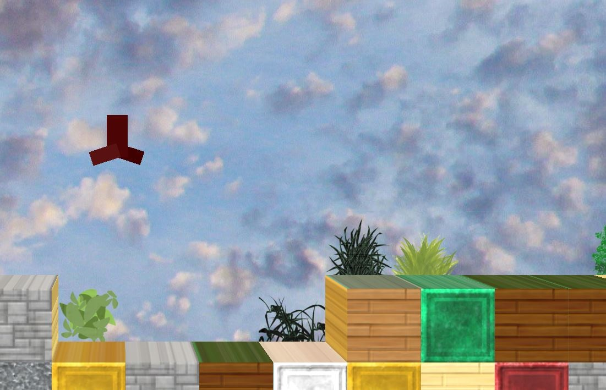

In this project, you can navigate the surface of a limited minecraft or terraria-style world. Each block has a random texture according to a texture map, as well as a corresponding normal map. The world has an efficient collision system which adjusts according to the random block placements.

The character itself has basic tiered animation, with an animation speed that automatically adjusts according to framerate and movement speed. The character's movements rely on realistic physics, allowing for smooth and enjoyable jumping and running.